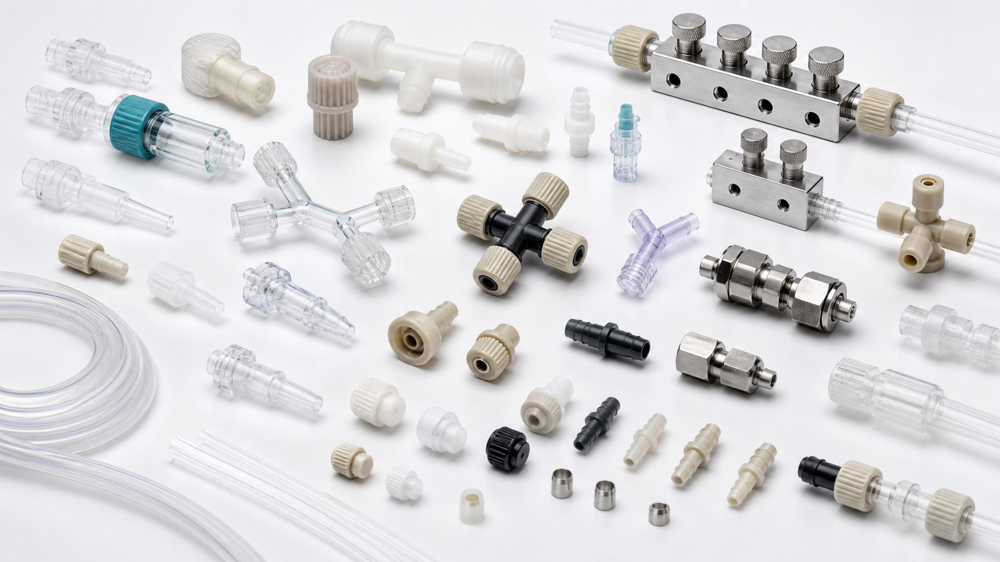

Interface standard
Confirm luer, barb, 1/4-28, 10-32, compression, press-fit, or application-specific geometry.

Connections and manifolds
Browse luer, barbed, compression, PEEK, manifold, and reservoir interfaces for research microfluidic tubing and chip connections.

Selection answer
Select a microfluidic connector by matching tube OD, thread or port standard, wetted material, pressure rating, and required dead volume. A connector that physically fits can still be unsuitable if its ferrule, bore, solvent resistance, or sealing method does not match the complete fluid path.
Technical content reviewed by MicroCD Labs · Updated July 28, 2026. Confirm final selection against the written quote, applicable source documentation, and the complete research system.
Before requesting a quote
MicroCD Labs reviews compatibility, documentation, final pricing, availability, and lead time before payment.
Confirm luer, barb, 1/4-28, 10-32, compression, press-fit, or application-specific geometry.
Review PEEK, ETFE, PTFE, polypropylene, elastomer, or metal exposure against the fluid.
Minimize unswept volume and choose an interface that can be assembled consistently.
Research-use catalog
Open an item for variants, specifications, source and production-route review, documentation, and quote status.
Connectors and manifolds
Source and production route confirmed by quote.
Male, female, threaded, and adapter luer connectors for syringe, tubing, and chip workflows.
Connectors and manifolds
Source and production route confirmed by quote.
Straight, elbow, tee, and reducer barbed fittings for soft tubing and low-pressure lab assemblies.
Connectors and manifolds
Source and production route confirmed by quote.
Compression fittings, nuts, ferrules, and unions for secure connections in small-bore tubing runs.
Connectors and manifolds
Source and production route confirmed by quote.
Distribution manifolds for routing multiple inputs, outputs, washing lines, and reagent feeds.
Technical review
Share the fluid, target flow or pressure, interface sizes, and intended research workflow. We can help build a compatible shortlist.